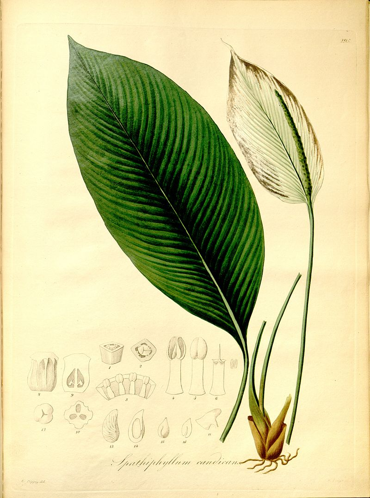

Спатифи́ллум, или Спатифиллюм (лат. Spathiphyllum), — род многолетних вечнозелёных растений семейства Ароидные (Araceae), некоторые представители — популярные комнатные растения. Название рода происходит от двух греческих слов: σπάθη (spathe) — «покрывало» и φύλλον (phyllon) — «лист».
Многолетние вечнозелёные растения. В основном наземные, но среди них встречаются эпифиты и хемиэпифиты.
Корневище короткое.
Стебель отсутствует — прикорневые листья образуют пучок прямо из почвы.
Листья от овальных до ланцетовидных, цельные, с отчётливо различимой средней жилкой и тонкими параллельно идущими боковыми. Черешок удлинённый, снабжён влагалищем до середины длины или до основания листовой пластинки, с раздутыми сосудиками у основания листа.
Цветоножка равна или превышает длину черешка. Соцветие — початок с покрывалом у основания. Покрывало продолговато-эллиптическое, длиннее початка, от зелёного до белого, не опадающее. Белое покрывало после отцветания быстро зеленеет. Початок от сидячего до снабжённого ножкой. Цветки обоеполые, заключены в два круга сросшихся лепестков околоцветника; тычинок 6; завязь трёхгнёздная с 1—7 семяпочками в каждом гнезде.
Семена изогнутые, гладкие.